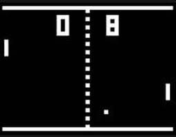
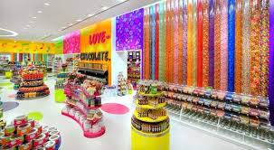
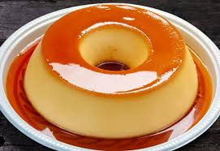

Meus projetos

Pong no Java: Um Jogo Simples Porém Divertido
Este projeto é sobre um jogo programado em HTML e estilizado em CSS feito como trabalho escolar.

Loja de Doces: Um Site para Vender
Este projeto é um site criado na escola com o intúito de ser um "site propaganda" para uma loja de doces, programado em HTML e CSS.

Ranqueando Doces: Um Site Para Ver Bons Doces
Este projeto é sobre um site programado em HTML e CSS para apresentar bons doces e suas receitas.